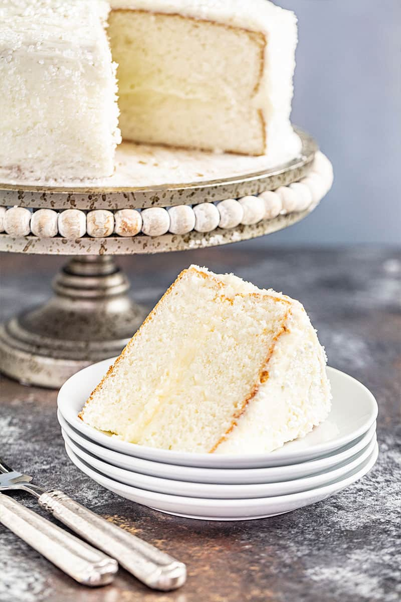

White Cake

A classic light, airy cake frosted with buttercream
This cake is flavored with almond extract instead of vanilla, which is an amazing flavor if you've never tried it.
You can always substitute vanilla flavor if you prefer or if you simply don't have almond extract.
Ingredients
Cake Batter
- 1 cup salted butter, softened
- 1.5 cups granulated sugar
- 2 teaspoons almond extract (or sub vanilla)
- .5 cups sour cream, room temperature
- 3.5 cups cake flour
- 4 teaspoons baking powder
- .5 teaspoons salt
- 6 large egg whites, room temperature
- 1 cup milk (or buttermilk), room temperature
Buttercream Frosting
- 1.5 cups salted butter, softened
- 2 teaspoons almond extract (or sub vanilla)
- 4 cups powdered sugar
- 1 tablespoon milk